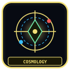
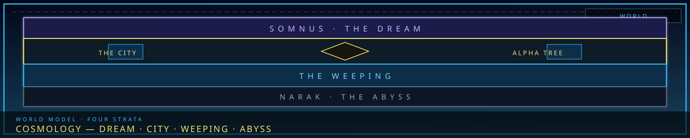
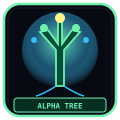

Three strataDream · seam · Abyss
/// RAPID JUMP:
STATUS: ARCHIVE VERIFIED |
CLEARANCE: LEVEL-4 OVERSIGHT |
PROTOCOL: REVERIE DIRECTORATE
ARTICLE
DISCUSSION
SOURCE
HISTORY
YEAR 4,238 · DAWN OF HOPE
LORE & WORLD RECORD
Somnarak Cosmology
Contents
“The city is not on the world. The city is the joint where three worlds refuse to unstick.”


The jointCity as nexusOverview
Somnarak sits between two primordial states. The Dream (Somnus) is unformed potential — memory, desire, fear. It is not inherently kind: a prison of nostalgia, a labyrinth of false hopes. It manifests as illusion, subconscious entities, altered states. The Abyss (Narak) is consequence — actions have weight, debts are collected. It is not purely punitive: a crucible of growth, a forge of truth. It manifests as physical law, karmic debt, systemic oppression.
This page is cosmology: Dream, Abyss, Han as binder. The three categories of Han (City / Outside / Inner) live on the Three Sorrows. Entity origin lives on the Weeping. Classification codes live on SECC. Aesthetic notes and the open-question dump that used to sit under this URL are gone — those were leftover the cosmology record chapters X and XI.
The old title “Five Layers” mixed Somnus’s dive-layers with cosmology. Dive layers stay on the Dream realm.
Han (한) — the binding force
Han is collective grief that has become structural — not only emotion, but material. Mortar between bricks. Foundation of buildings. Blood of the city. It accumulates over generations into architecture, law, memory, transformation. It cannot be destroyed — only managed, redirected, or transformed.
In the Before-Time it flowed like weather. After the Becoming it pooled. After the Structuring it is the world. Wars that tried to seal it, sever it, or feed it are on the Wars of Somnarak. The Tree that froze it into meaning is on the Alpha Tree.
Three Sorrows — index
Not all sorrow is the same. Han shows as three categories. Full articles on each stay on the Three Sorrows page; this is the cosmological index so a search for “cosmology” does not paste Zone B weeping-walls into this URL.
| Category | Korean | Source | Character | Manifestation |
|---|---|---|---|---|
| City Sorrow | 도한 (Dohan) | City structure, systems, history | Collective, ambient, structural | Weeping buildings, whispering streets, the city’s weight |
| Outside Sorrow | 외한 (Oehan) | Wilderness, Desolate, external forces | Wild, unstructured, invasive | Raw Han flows, wilderness entities, Desolate anomalies |
| Inner Sorrow | 내한 (Naehan) | Personal grief, private trauma | Intimate, corrosive | Fracture, Architect’s Mark, debt accumulation |
City Sorrow is institutional — Collectors, Council, the city’s existence feeding on inhabitants. Zone B feels it most; Zone A channels it through the Tree; the Maw is its extreme. Outside Sorrow has no master beyond the wall. Inner Sorrow is the one that Fractures a single person. How the three interact, who is affected, and the danger of each: Three Sorrows.
Nested world
Outside → in, from the world-bible: Mugenhan (the world) contains the wilderness and other settlements; the unofficial zone is the Desolate; Somnarak is the city of five zones around the Alpha Tree. The Veil/Raw split is civic governance, not a cosmological layer — that atlas page is District structure.
Open questions that belong to cosmology (not a dump of every unanswered line in the bible): why Han began to accumulate; whether Dream and Abyss were always this close; whether the Tree was grown or designed. Faction answers contradict. Keepers hold fragments. Weavers hold echoes. The Council holds a story that sounds like weather becoming law.
CANONICAL RECORD: Sourced from PROJECT_SOMNARAK.md — this chapter only. Other books stay on their own pages.
CANONICAL CROSS-LINKS & ATLAS CONNECTIONS